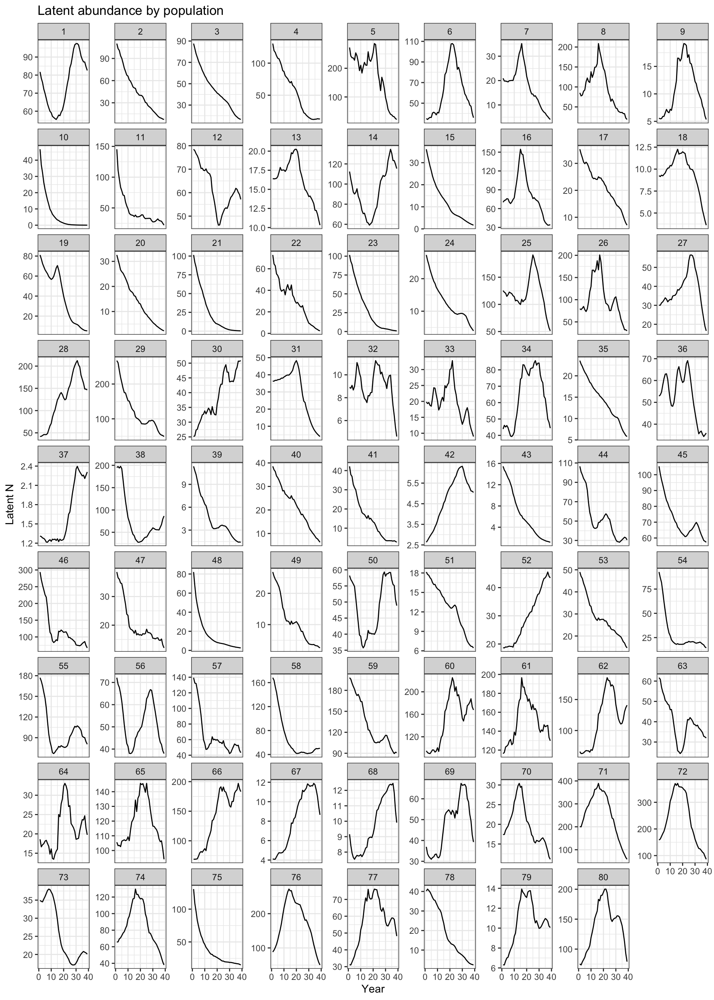
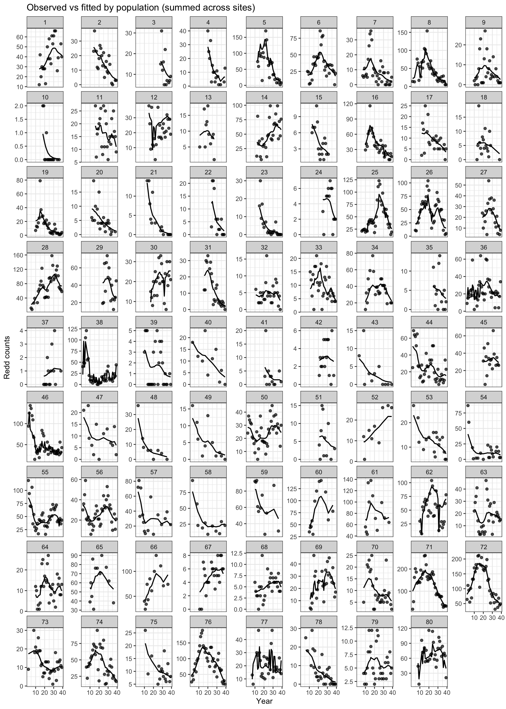
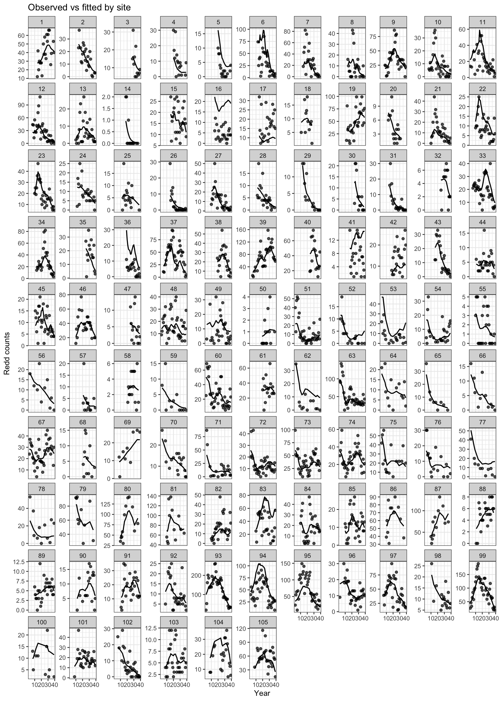
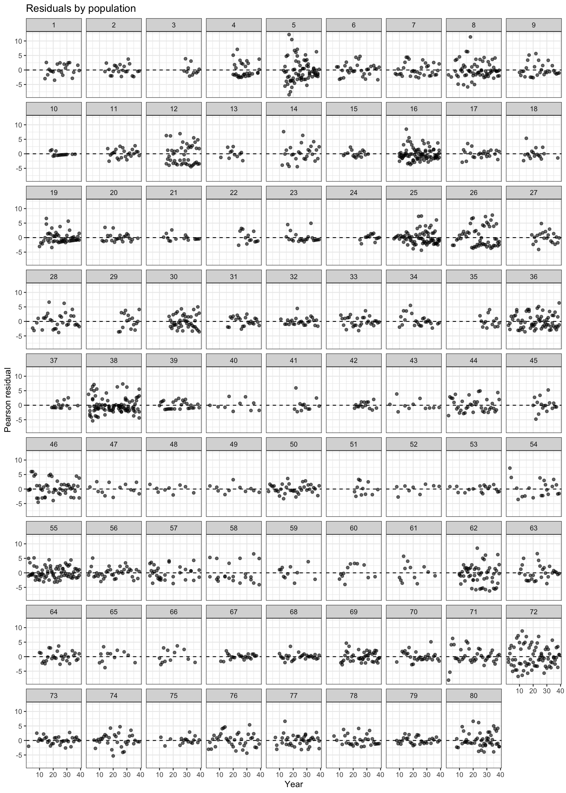
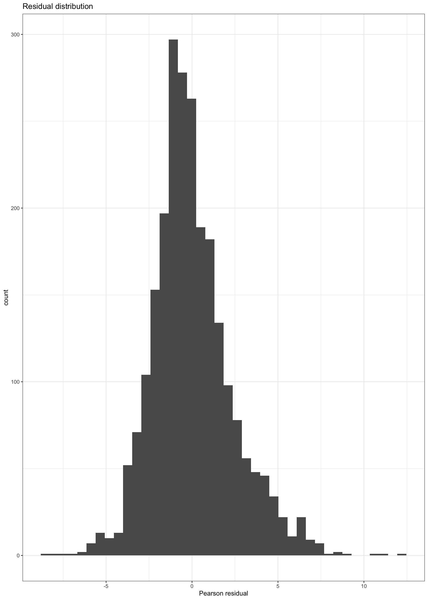
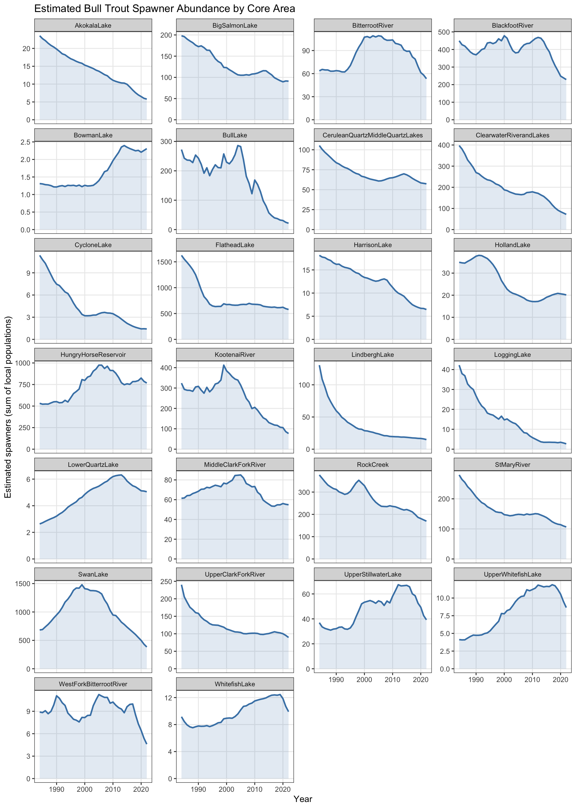
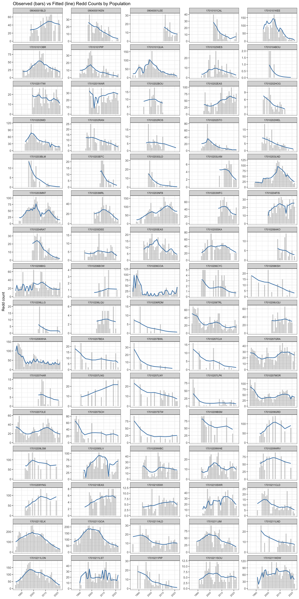
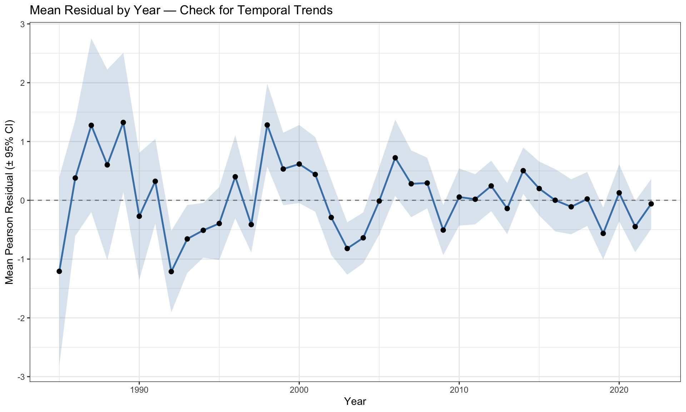
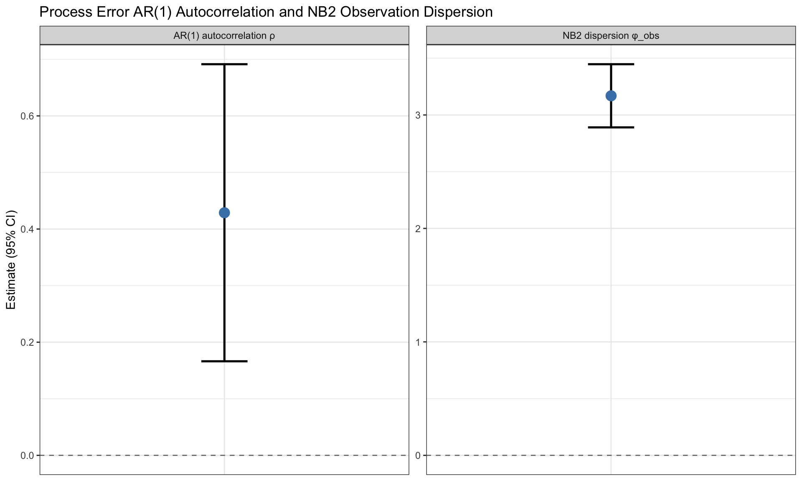
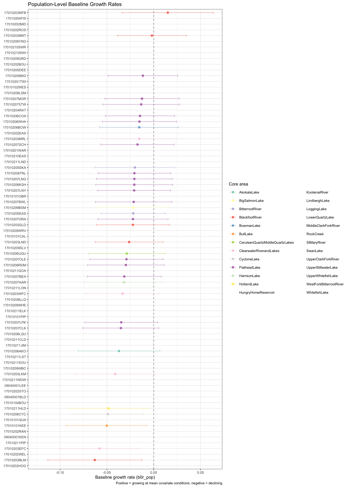

Show code
library(here)
library(tidyverse)
library(knitr)
library(kableExtra)TMB State-Space Ricker Model — v1.18
library(here)
library(tidyverse)
library(knitr)
library(kableExtra)# ── Version identifiers ──────────────────────────────────────────────────────
DataVersion <- "1_5"
ModelVersion <- "1_18"
RunVersion <- "1_18"
FunctionVersion <- "1_8"
SaveName <- paste0("MPVA_Fit_D", DataVersion, "_M", ModelVersion, "_R", RunVersion)
# ── Helper functions ─────────────────────────────────────────────────────────
source(here("Code", paste0("MPVA_Functions", FunctionVersion, ".R")))
# ── Load data (population names, years, covariates) ─────────────────────────
source(here("Code", paste0("PrepareData_MPVA", DataVersion, ".R")))Full dataset: using 26 core areas
Populations: 80
Core areas: 26
Years: 39 ( 1984 - 2022 )
Redd sites: 105
CPUE obs: 60 across 2 sections
temp_mean: 10.11 | temp_sd: 1.61
All dimension checks passed.# ── Load saved model fit ─────────────────────────────────────────────────────
fit <- readRDS(here("Results", paste0(SaveName, ".RDS")))
list2env(fit, envir = .GlobalEnv)<environment: R_GlobalEnv>pop_core_vec <- CoreArea_Num[match(seq_len(data_list$nPop), LocalPops_Num)]
# ── Convenience extractor ────────────────────────────────────────────────────
get_rep <- function(pname) {
list(
est = fit_rep$value[names(fit_rep$value) == pname],
se = fit_rep$sd[names(fit_rep$value) == pname]
)
}This document presents results from a hierarchical state-space Ricker model for bull trout (Salvelinus confluentus) fitted to redd count time series across multiple local populations nested within core areas.
The model uses a three-level spatial structure:
| Level | Unit | N |
|---|---|---|
| Core area | Watershed complex | 26 |
| Local population | Spawning tributary | 80 |
| Survey site | Redd count reach | 105 |
year_range <- range(DatYears)
n_obs <- sum(!is.na(data_list$ReddCounts))
n_possible <- prod(dim(data_list$ReddCounts))
data.frame(
Metric = c("Years", "Core areas", "Local populations",
"Survey sites", "Site-year observations", "Data coverage",
"CPUE observations"),
Value = c(
paste(year_range[1], "–", year_range[2]),
data_list$nCore,
data_list$nPop,
data_list$nSites,
n_obs,
paste0(round(100 * n_obs / n_possible, 1), "%"),
data_list$nCPUEobs
)
) |>
kable(col.names = c("Metric", "Value")) |>
kable_styling(bootstrap_options = c("striped", "hover"), full_width = FALSE)| Metric | Value |
|---|---|
| Years | 1984 – 2022 |
| Core areas | 26 |
| Local populations | 80 |
| Survey sites | 105 |
| Site-year observations | 2407 |
| Data coverage | 58.8% |
| CPUE observations | 60 |
The latent population abundance follows a density-dependent Ricker process with AR(1) process error:
\[\log N_{p,t} = \log N_{p,t-1} + R_{p,t} + \varepsilon_{p,t}\]
where the instantaneous growth rate is:
\[R_{p,t} = b_{0r,p} + \beta_{\text{Flow},p} \cdot \text{Flow}_{p,t-1} + \beta_{\text{Temp},p} \cdot T_{p,t-1} + \beta_{\text{Temp}_2} \cdot T_{p,t-1}^2 + \beta_{\text{INV},p} \cdot \text{INV}_{p,t-1} + \beta_{\text{LKT},c} \cdot \text{LKT}_{c,t-1} - \phi_p \cdot D_{p,t-1}\]
Process errors follow an AR(1) structure:
\[\varepsilon_{p,t} = \rho \cdot \varepsilon_{p,t-1} + \eta_{p,t}, \quad \eta_{p,t} \sim \mathcal{N}\!\left(0,\; \sigma_N \sqrt{1-\rho^2}\right)\]
All dynamic covariates carry an effective lag of 6 years (5-year R-side lag + 1-year C++ indexing), reflecting the time from in-gravel incubation to adult redd counts.
Redd counts at each survey site follow a Negative Binomial (NB2) distribution:
\[C_{s,y} \sim \text{NB2}\!\left(\mu_{s,y},\; \phi_{\text{obs}}\right), \quad \mu_{s,y} = 0.5 \cdot N_{p,y} \cdot \pi_s\]
where \(\phi_{\text{obs}}\) is the NB2 dispersion parameter (\(\text{Var} = \mu + \mu^2/\phi_{\text{obs}}\); as \(\phi_{\text{obs}} \to \infty\) the distribution collapses to Poisson), and \(\pi_s\) is the fraction of population habitat surveyed at site \(s\).
For populations with electrofishing data, model-based CPUE (fish km⁻¹) provides an independent abundance index:
\[\log(\text{CPUE}_i) \sim \mathcal{N}\!\left(\log N_{p,y} - \log(\text{extent}_p) + q_s,\; \sigma_{\text{CPUE}}\right)\]
where \(q_s\) is a section-level catchability random effect that absorbs persistent efficiency differences among electrofishing reaches.
| Parameter | Hierarchy |
|---|---|
| Baseline growth rate \(b_{0r}\) | Global → Core → Population |
| Density dependence \(\phi\) | Global → Core → Population |
| Flow slope \(\beta_\text{Flow}\) | Global hyper-mean → Population |
| Temperature slope \(\beta_\text{Temp}\) | Global hyper-mean → Population |
| Invasive slope \(\beta_\text{INV}\) | Global hyper-mean → Population |
| Lake trout slope \(\beta_\text{LKT}\) | Global hyper-mean → Core area |
| Adfluvial access, unconfined valley bottom | Global scalar on \(b_{0r}\) mean |
| W95 winter flood frequency, road density | Global scalar on \(b_{0r}\) mean |
conv_label <- ifelse(optB$convergence == 0, "Converged (0)",
paste("Not converged (", optB$convergence, ")"))
max_grad <- max(abs(fit_rep$gradient.fixed))
rho_e <- get_rep("rho")
phi_e <- get_rep("phi_obs")
data.frame(
Metric = c("Convergence code", "Negative log-likelihood", "Max |gradient|",
"AR(1) ρ", "NB2 dispersion φ"),
Value = c(
conv_label,
round(optB$objective, 2),
formatC(max_grad, format = "e", digits = 2),
paste0(round(rho_e$est, 3), " (SE ", round(rho_e$se, 3), ")"),
paste0(round(phi_e$est, 3), " (SE ", round(phi_e$se, 3), ")")
)
) |>
kable(col.names = c("Metric", "Value")) |>
kable_styling(bootstrap_options = c("striped", "hover"), full_width = FALSE)| Metric | Value |
|---|---|
| Convergence code | Converged (0) |
| Negative log-likelihood | 8770.74 |
| Max |gradient| | 1.97e+00 |
| AR(1) ρ | 0.429 (SE 0.134) |
| NB2 dispersion φ | 3.169 (SE 0.142) |
Estimated latent spawner abundance summed to the core-area level. Individual population trajectories are available in the Data tab.
fit_plots <- plot_fit(data_list, fit_rep)




Worst-fitting sites:
# A tibble: 15 × 6
pop site n rmse mean_pearson sd_pearson
<fct> <fct> <int> <dbl> <dbl> <dbl>
1 71 93 38 31.6 0.156 2.79
2 5 6 26 31.4 -3.08 2.23
3 72 95 38 30.8 2.42 3.16
4 62 83 27 29.2 -2.70 2.69
5 72 94 38 28.5 -2.61 1.99
6 61 81 12 26.1 0.114 2.98
7 76 99 38 22.9 0.139 2.40
8 28 39 32 21.9 0.203 2.58
9 60 80 12 21.7 0.264 2.46
10 5 7 24 20.5 2.07 3.99
11 80 105 29 20.5 1.23 2.67
12 46 63 38 20.1 1.27 2.41
13 26 37 34 20.1 2.05 3.08
14 14 19 27 19.8 0.276 3.02
15 8 12 33 19.0 1.25 3.24dfN <- fit_plots$latent
df_obsfit <- fit_plots$fit
df_resid <- fit_plots$resid
# Sum latent N across populations within each core area
dfN_core <- dfN |>
mutate(
year_actual = DatYears[year],
core_name = U_CoreAreas_In[pop_core_vec[pop]]
) |>
group_by(core_name, year_actual) |>
summarise(N_total = sum(N, na.rm = TRUE), .groups = "drop")
ggplot(dfN_core, aes(x = year_actual, y = N_total)) +
geom_area(fill = "steelblue", alpha = 0.15) +
geom_line(color = "steelblue", linewidth = 0.9) +
facet_wrap(~core_name, scales = "free_y", ncol = 4) +
labs(x = "Year", y = "Estimated spawners (sum of local populations)",
title = "Estimated Bull Trout Spawner Abundance by Core Area") +
theme_bw(base_size = 11) +
theme(strip.text = element_text(size = 8),
panel.grid.minor = element_blank())
df_obsfit |>
ggplot(aes(x = mu, y = y_obs)) +
geom_point(alpha = 0.3, size = 1.2, color = "grey30") +
geom_abline(slope = 1, intercept = 0, color = "steelblue", linetype = 2, linewidth = 1) +
scale_x_continuous(trans = "log1p", labels = scales::comma) +
scale_y_continuous(trans = "log1p", labels = scales::comma) +
labs(x = "Fitted NB2 mean (log1p scale)", y = "Observed (log1p scale)",
title = "Observed vs Fitted Redd Counts — All Site-Years") +
theme_bw()
# Population-level summaries: total observed vs fitted by year
df_obsfit |>
mutate(
year_actual = DatYears[year],
pop_name = U_LocalPops_In[pop],
core_name = U_CoreAreas_In[pop_core_vec[pop]]
) |>
group_by(pop_name, core_name, year_actual) |>
summarise(y_obs = sum(y_obs, na.rm = TRUE),
mu = sum(mu, na.rm = TRUE),
.groups = "drop") |>
ggplot(aes(x = year_actual)) +
geom_col(aes(y = y_obs), fill = "grey70", alpha = 0.6, width = 0.8) +
geom_line(aes(y = mu), color = "steelblue", linewidth = 0.7) +
facet_wrap(~pop_name, scales = "free_y", ncol = 5) +
labs(x = NULL, y = "Redd count",
title = "Observed (bars) vs Fitted (line) Redd Counts by Population") +
theme_bw(base_size = 9) +
theme(strip.text = element_text(size = 6),
axis.text.x = element_text(size = 6, angle = 45, hjust = 1))
df_resid |>
ggplot(aes(x = pearson)) +
geom_histogram(bins = 60, fill = "steelblue", color = "white", alpha = 0.8) +
geom_vline(xintercept = 0, linetype = 2, color = "grey40") +
labs(x = "Pearson Residual", y = "Count",
title = "Residual Distribution — All Site-Years") +
theme_bw()
# Mean residual by year — check for systematic temporal trends
df_resid |>
mutate(year_actual = DatYears[year]) |>
group_by(year_actual) |>
summarise(mean_r = mean(pearson, na.rm = TRUE),
se_r = sd(pearson, na.rm = TRUE) / sqrt(n()),
.groups = "drop") |>
ggplot(aes(x = year_actual, y = mean_r)) +
geom_hline(yintercept = 0, linetype = 2, color = "grey50") +
geom_ribbon(aes(ymin = mean_r - 1.96 * se_r,
ymax = mean_r + 1.96 * se_r), alpha = 0.2, fill = "steelblue") +
geom_line(color = "steelblue", linewidth = 0.9) +
geom_point(size = 2) +
labs(x = "Year", y = "Mean Pearson Residual (± 95% CI)",
title = "Mean Residual by Year — Check for Temporal Trends") +
theme_bw()
AR(1) temporal autocorrelation and NB2 overdispersion absorb variance that would otherwise inflate covariate effects or process error. The AR(1) captures persistent multi-year trends in population dynamics; NB2 absorbs aggregated spawning behaviour and observer variability in redd counts.
rho_e <- get_rep("rho")
phi_e <- get_rep("phi_obs")
sigN_e <- get_rep("sigmaN")
sigq_e <- get_rep("sigma_q")
sigc_e <- get_rep("sigma_cpue")
params_df <- data.frame(
Parameter = c("AR(1) autocorrelation ρ",
"Process error σ_N (innovation SD)",
"NB2 dispersion φ_obs",
"CPUE observation SD σ_cpue",
"CPUE catchability SD σ_q"),
Estimate = c(rho_e$est, sigN_e$est, phi_e$est, sigc_e$est, sigq_e$est),
SE = c(rho_e$se, sigN_e$se, phi_e$se, sigc_e$se, sigq_e$se)
) |>
mutate(
Lower95 = Estimate - 1.96 * SE,
Upper95 = Estimate + 1.96 * SE
)
params_df |>
kable(digits = 3, col.names = c("Parameter", "Estimate", "SE", "Lower 95%", "Upper 95%")) |>
kable_styling(bootstrap_options = c("striped", "hover"), full_width = FALSE)| Parameter | Estimate | SE | Lower 95% | Upper 95% | |
|---|---|---|---|---|---|
| rho | AR(1) autocorrelation ρ | 0.429 | 0.134 | 0.166 | 0.691 |
| sigmaN | Process error σ_N (innovation SD) | 0.108 | 0.017 | 0.075 | 0.141 |
| phi_obs | NB2 dispersion φ_obs | 3.169 | 0.142 | 2.891 | 3.447 |
| sigma_cpue | CPUE observation SD σ_cpue | 0.580 | 0.060 | 0.462 | 0.697 |
| sigma_q | CPUE catchability SD σ_q | 1.042 | 0.418 | 0.222 | 1.861 |
params_df |>
filter(Parameter %in% c("AR(1) autocorrelation ρ", "NB2 dispersion φ_obs")) |>
ggplot(aes(x = Parameter, y = Estimate)) +
geom_hline(yintercept = 0, linetype = 2, color = "grey50") +
geom_errorbar(aes(ymin = Lower95, ymax = Upper95), width = 0.15, linewidth = 0.9) +
geom_point(size = 4, color = "steelblue") +
facet_wrap(~Parameter, scales = "free", ncol = 2) +
labs(x = NULL, y = "Estimate (95% CI)",
title = "Process Error AR(1) Autocorrelation and NB2 Observation Dispersion") +
theme_bw() +
theme(axis.text.x = element_blank(), axis.ticks.x = element_blank())
These covariates shift the prior mean of the population-level growth rate intercept (\(b_{0r,p}\)). Adfluvial access (lake-associated populations) and unconfined valley bottom (floodplain habitat quality) reflect structural habitat attributes. W95 flood frequency and road density in the valley bottom capture disturbance.
global_pars <- c("bAdf", "bUVB", "bFlood", "bRD")
global_df <- lapply(global_pars, function(p) {
r <- get_rep(p)
if (!length(r$est)) return(NULL)
data.frame(Parameter = p, Estimate = r$est[1], SE = r$se[1])
}) |>
bind_rows() |>
mutate(
Label = c("Adfluvial access",
"Unconfined valley bottom (z)",
"W95 winter flood frequency (z)",
"Road density in valley bottom (z)"),
Lower95 = Estimate - 1.96 * SE,
Upper95 = Estimate + 1.96 * SE,
sig = ifelse(Lower95 > 0 | Upper95 < 0, "*", "")
)
global_df |>
ggplot(aes(x = reorder(Label, Estimate), y = Estimate)) +
geom_hline(yintercept = 0, linetype = 2, color = "grey50") +
geom_errorbar(aes(ymin = Lower95, ymax = Upper95), width = 0.2, linewidth = 0.8) +
geom_point(size = 3.5, color = "steelblue") +
geom_text(aes(label = sig, y = Upper95 + 0.01), size = 5, color = "tomato") +
coord_flip() +
labs(x = NULL, y = "Coefficient estimate (95% CI)",
title = "Static Covariate Effects on Baseline Growth Rate",
caption = "* = 95% CI excludes zero") +
theme_bw()
Bull trout growth rate shows a unimodal response to water temperature (linear + negative quadratic).
if (covar_config$use_Temp == 1) {
plot_temp_curve(fit_rep, temp_mean = temp_mean, temp_sd = temp_sd)
}Thermal optimum (z-scored): -0.413
Thermal optimum (raw scale): 9.44 
Each local population has its own sensitivity to summer streamflow, drawn from a global hyper-distribution (dashed red line = hyper-mean).
if (covar_config$use_Flow == 1) {
r <- get_rep("bFlow_pop")
bFlow_M <- get_rep("bFlow_M")$est[1]
data.frame(
pop_name = U_LocalPops_In,
core_name = U_CoreAreas_In[pop_core_vec],
estimate = r$est,
se = r$se
) |>
ggplot(aes(x = reorder(pop_name, estimate), y = estimate, color = core_name)) +
geom_hline(yintercept = 0, linetype = 2, color = "grey50") +
geom_hline(yintercept = bFlow_M, linetype = 3, color = "tomato", linewidth = 0.8) +
geom_errorbar(aes(ymin = estimate - 1.96 * se,
ymax = estimate + 1.96 * se), width = 0.4, alpha = 0.6) +
geom_point(size = 1.8) +
annotate("text", x = 1, y = bFlow_M,
label = paste0("Hyper-mean = ", round(bFlow_M, 3)),
hjust = 0, vjust = -0.6, color = "tomato", size = 3.5) +
coord_flip() +
scale_color_brewer(palette = "Set3", name = "Core area") +
labs(x = NULL, y = "Flow slope (bFlow_pop)",
title = "Summer Streamflow Effect on Growth Rate by Population") +
theme_bw(base_size = 9) +
theme(legend.position = "right",
axis.text.y = element_text(size = 7))
}
if (covar_config$use_Temp == 1) {
r <- get_rep("bTemp_pop")
bTemp_M <- get_rep("bTemp_M")$est[1]
data.frame(
pop_name = U_LocalPops_In,
core_name = U_CoreAreas_In[pop_core_vec],
estimate = r$est,
se = r$se
) |>
ggplot(aes(x = reorder(pop_name, estimate), y = estimate, color = core_name)) +
geom_hline(yintercept = 0, linetype = 2, color = "grey50") +
geom_hline(yintercept = bTemp_M, linetype = 3, color = "tomato", linewidth = 0.8) +
geom_errorbar(aes(ymin = estimate - 1.96 * se,
ymax = estimate + 1.96 * se), width = 0.4, alpha = 0.6) +
geom_point(size = 1.8) +
annotate("text", x = 1, y = bTemp_M,
label = paste0("Hyper-mean = ", round(bTemp_M, 3)),
hjust = 0, vjust = -0.6, color = "tomato", size = 3.5) +
coord_flip() +
scale_color_brewer(palette = "Set3", name = "Core area") +
labs(x = NULL, y = "Temperature linear slope (bTemp_pop)",
title = "August Temperature Linear Effect on Growth Rate by Population",
caption = "Global quadratic (bTemp2) is negative — combined effect is unimodal") +
theme_bw(base_size = 9) +
theme(legend.position = "right",
axis.text.y = element_text(size = 7))
}
if (covar_config$use_INV == 1) {
r <- get_rep("bINV_pop")
bINV_M <- get_rep("bINV_M")$est[1]
data.frame(
pop_name = U_LocalPops_In,
core_name = U_CoreAreas_In[pop_core_vec],
estimate = r$est,
se = r$se
) |>
ggplot(aes(x = reorder(pop_name, estimate), y = estimate, color = core_name)) +
geom_hline(yintercept = 0, linetype = 2, color = "grey50") +
geom_hline(yintercept = bINV_M, linetype = 3, color = "tomato", linewidth = 0.8) +
geom_errorbar(aes(ymin = estimate - 1.96 * se,
ymax = estimate + 1.96 * se), width = 0.4, alpha = 0.6) +
geom_point(size = 1.8) +
annotate("text", x = 1, y = bINV_M,
label = paste0("Hyper-mean = ", round(bINV_M, 3)),
hjust = 0, vjust = -0.6, color = "tomato", size = 3.5) +
coord_flip() +
scale_color_brewer(palette = "Set3", name = "Core area") +
labs(x = NULL, y = "Invasive ratio slope (bINV_pop)",
title = "Non-Native Trout Ratio Effect on Growth Rate by Population") +
theme_bw(base_size = 9) +
theme(legend.position = "right",
axis.text.y = element_text(size = 7))
}
Lake trout abundance index (net-catch) is available only for core areas with confirmed lake trout presence. The hyper-mean \(\beta_{\text{LKT},M}\) summarises the average temporal relationship between lake trout abundance and downstream bull trout growth rates.
if (covar_config$use_LKT == 1) {
r <- get_rep("bLKT_core")
bLKT_M <- get_rep("bLKT_M")$est[1]
data.frame(
core_name = U_CoreAreas_In,
estimate = r$est,
se = r$se
) |>
filter(!is.na(estimate)) |>
ggplot(aes(x = reorder(core_name, estimate), y = estimate)) +
geom_hline(yintercept = 0, linetype = 2, color = "grey50") +
geom_hline(yintercept = bLKT_M, linetype = 3, color = "tomato", linewidth = 0.8) +
geom_errorbar(aes(ymin = estimate - 1.96 * se,
ymax = estimate + 1.96 * se), width = 0.25, linewidth = 0.8) +
geom_point(size = 3, color = "steelblue") +
annotate("text", x = 1, y = bLKT_M,
label = paste0("Hyper-mean = ", round(bLKT_M, 3)),
hjust = 0, vjust = -0.6, color = "tomato", size = 3.5) +
coord_flip() +
labs(x = NULL, y = "Lake trout slope (bLKT_core)",
title = "Lake Trout Abundance Effect on Bull Trout Growth Rate by Core Area",
caption = "Only core areas with lake trout netting data shown") +
theme_bw()
}
b0r <- get_rep("b0r_pop")
b0r_df <- data.frame(
pop_name = U_LocalPops_In,
core_name = U_CoreAreas_In[pop_core_vec],
b0r = b0r$est,
b0r_se = b0r$se
)
ggplot(b0r_df, aes(x = reorder(pop_name, b0r), y = b0r, color = core_name)) +
geom_hline(yintercept = 0, linetype = 2, color = "grey50") +
geom_errorbar(aes(ymin = b0r - 1.96 * b0r_se,
ymax = b0r + 1.96 * b0r_se), width = 0.4, alpha = 0.6) +
geom_point(size = 1.8) +
coord_flip() +
scale_color_brewer(palette = "Set3", name = "Core area") +
labs(x = NULL, y = "Baseline growth rate (b0r_pop)",
title = "Population-Level Baseline Growth Rates",
caption = "Positive = growing at mean covariate conditions; negative = declining") +
theme_bw(base_size = 9) +
theme(axis.text.y = element_text(size = 7))
sigma_pars <- c(
"sigmaN" = "Process error σ_N (innovation)",
"sigma_b0r_core" = "Growth rate: core-level SD",
"sigma_b0r_pop" = "Growth rate: pop-level SD",
"sigma_b0phi_pop" = "Density dependence: pop SD",
"sigma_bFlow" = "Flow slope: pop SD",
"sigma_bTemp" = "Temp slope: pop SD",
"sigma_bINV" = "Invasive slope: pop SD",
"sigma_bLKT" = "Lake trout slope: core SD",
"sigma_cpue" = "CPUE observation SD",
"sigma_q" = "CPUE catchability SD"
)
sigma_df <- lapply(names(sigma_pars), function(nm) {
r <- get_rep(nm)
if (!length(r$est)) return(NULL)
data.frame(Label = sigma_pars[nm], Estimate = r$est[1], SE = r$se[1])
}) |>
bind_rows()
sigma_df |>
mutate(Lower95 = pmax(0, Estimate - 1.96 * SE),
Upper95 = Estimate + 1.96 * SE) |>
ggplot(aes(x = reorder(Label, Estimate), y = Estimate)) +
geom_errorbar(aes(ymin = Lower95, ymax = Upper95), width = 0.25, linewidth = 0.8) +
geom_point(size = 3, color = "steelblue") +
coord_flip() +
labs(x = NULL, y = "Standard deviation estimate (95% CI)",
title = "Variance Component Estimates") +
theme_bw()
Estimated baseline growth rate and density dependence for each local population.
phi_pop <- exp(fit_rep$value[names(fit_rep$value) == "log_b0phi_pop"]) / 1000
data.frame(
Population = U_LocalPops_In,
`Core Area` = U_CoreAreas_In[pop_core_vec],
`b0r` = round(b0r_df$b0r, 3),
`b0r SE` = round(b0r_df$b0r_se, 3),
`phi (fish/km)` = round(phi_pop, 4),
check.names = FALSE
) |>
kable(col.names = c("Population", "Core Area", "b0r", "SE", "φ (fish/km)"),
align = c("l", "l", "r", "r", "r")) |>
kable_styling(bootstrap_options = c("striped", "hover", "condensed"),
font_size = 13) |>
column_spec(1, bold = TRUE)| Population | Core Area | b0r | SE | φ (fish/km) |
|---|---|---|---|---|
| 09040001BLD | StMaryRiver | -0.046 | 0.025 | 7e-04 |
| 09040001KEN | StMaryRiver | -0.051 | 0.022 | 8e-04 |
| 09040001LEE | StMaryRiver | -0.044 | 0.024 | 8e-04 |
| 17010101CAL | KootenaiRiver | -0.024 | 0.021 | 8e-04 |
| 17010101KEE | BullLake | -0.050 | 0.022 | 8e-04 |
| 17010101OBR | KootenaiRiver | -0.021 | 0.018 | 7e-04 |
| 17010101PIP | KootenaiRiver | -0.035 | 0.022 | 8e-04 |
| 17010101QUA | KootenaiRiver | -0.049 | 0.019 | 8e-04 |
| 17010102WES | KootenaiRiver | -0.012 | 0.019 | 8e-04 |
| 17010104BOU | KootenaiRiver | -0.046 | 0.026 | 8e-04 |
| 17010201TWI | UpperClarkForkRiver | -0.012 | 0.021 | 7e-04 |
| 17010201WAR | UpperClarkForkRiver | -0.018 | 0.020 | 7e-04 |
| 17010202BOU | UpperClarkForkRiver | -0.010 | 0.020 | 8e-04 |
| 17010202EAS | RockCreek | -0.015 | 0.023 | 7e-04 |
| 17010202HOG | RockCreek | -0.074 | 0.026 | 8e-04 |
| 17010202MID | RockCreek | 0.003 | 0.021 | 8e-04 |
| 17010202RAN | RockCreek | -0.051 | 0.021 | 8e-04 |
| 17010202ROS | RockCreek | 0.000 | 0.022 | 8e-04 |
| 17010202STO | RockCreek | -0.045 | 0.020 | 8e-04 |
| 17010202WEL | RockCreek | -0.062 | 0.025 | 8e-04 |
| 17010203BLM | BlackfootRiver | -0.063 | 0.026 | 8e-04 |
| 17010203EFC | ClearwaterRiverandLakes | -0.058 | 0.022 | 8e-04 |
| 17010203GLD | BlackfootRiver | -0.022 | 0.020 | 8e-04 |
| 17010203LKM | ClearwaterRiverandLakes | -0.041 | 0.022 | 7e-04 |
| 17010203LND | BlackfootRiver | -0.026 | 0.018 | 8e-04 |
| 17010203MNT | BlackfootRiver | -0.002 | 0.019 | 7e-04 |
| 17010203MRL | ClearwaterRiverandLakes | -0.015 | 0.020 | 8e-04 |
| 17010203NFB | BlackfootRiver | 0.015 | 0.025 | 7e-04 |
| 17010203WFC | ClearwaterRiverandLakes | -0.033 | 0.020 | 7e-04 |
| 17010204FIS | MiddleClarkForkRiver | 0.007 | 0.020 | 8e-04 |
| 17010204RAT | MiddleClarkForkRiver | -0.015 | 0.020 | 8e-04 |
| 17010205DEE | WestForkBitterrootRiver | -0.011 | 0.024 | 8e-04 |
| 17010205EAS | BitterrootRiver | -0.022 | 0.017 | 8e-04 |
| 17010205SKA | BitterrootRiver | -0.020 | 0.022 | 7e-04 |
| 17010206AKO | AkokalaLake | -0.037 | 0.022 | 8e-04 |
| 17010206BIG | FlatheadLake | -0.012 | 0.019 | 8e-04 |
| 17010206BOW | BowmanLake | -0.015 | 0.021 | 8e-04 |
| 17010206COA | FlatheadLake | -0.015 | 0.019 | 8e-04 |
| 17010206CYC | CycloneLake | -0.049 | 0.020 | 8e-04 |
| 17010206KSH | FlatheadLake | -0.021 | 0.021 | 8e-04 |
| 17010206LLG | LoggingLake | -0.034 | 0.021 | 8e-04 |
| 17010206LQU | LowerQuartzLake | -0.036 | 0.022 | 8e-04 |
| 17010206RDM | FlatheadLake | -0.030 | 0.021 | 8e-04 |
| 17010206TRL | FlatheadLake | -0.021 | 0.020 | 8e-04 |
| 17010206UQU | CeruleanQuartzMiddleQuartzLakes | -0.029 | 0.021 | 7e-04 |
| 17010206WHA | FlatheadLake | -0.015 | 0.020 | 8e-04 |
| 17010207BEA | FlatheadLake | -0.031 | 0.020 | 8e-04 |
| 17010207BWL | FlatheadLake | -0.021 | 0.021 | 8e-04 |
| 17010207CLK | FlatheadLake | -0.035 | 0.021 | 8e-04 |
| 17010207GRA | FlatheadLake | -0.022 | 0.019 | 8e-04 |
| 17010207HAR | HarrisonLake | -0.032 | 0.021 | 8e-04 |
| 17010207LNG | FlatheadLake | -0.021 | 0.021 | 7e-04 |
| 17010207LNY | FlatheadLake | -0.021 | 0.020 | 8e-04 |
| 17010207LPK | FlatheadLake | -0.035 | 0.020 | 8e-04 |
| 17010207MOR | FlatheadLake | -0.012 | 0.020 | 8e-04 |
| 17010207OLE | FlatheadLake | -0.029 | 0.020 | 8e-04 |
| 17010207SCH | FlatheadLake | -0.017 | 0.020 | 8e-04 |
| 17010207STW | FlatheadLake | -0.013 | 0.021 | 8e-04 |
| 17010209BSM | BigSalmonLake | -0.022 | 0.020 | 8e-04 |
| 17010209GRD | HungryHorseReservoir | -0.007 | 0.020 | 8e-04 |
| 17010209LSM | HungryHorseReservoir | -0.012 | 0.020 | 8e-04 |
| 17010209SLV | HungryHorseReservoir | -0.027 | 0.018 | 8e-04 |
| 17010209WBC | HungryHorseReservoir | -0.040 | 0.021 | 8e-04 |
| 17010209WHE | HungryHorseReservoir | -0.034 | 0.019 | 8e-04 |
| 17010209WRV | HungryHorseReservoir | -0.024 | 0.020 | 8e-04 |
| 17010209YNG | HungryHorseReservoir | -0.004 | 0.021 | 8e-04 |
| 17010210EAS | UpperWhitefishLake | -0.019 | 0.020 | 8e-04 |
| 17010210SWI | WhitefishLake | -0.007 | 0.021 | 8e-04 |
| 17010210SWR | UpperStillwaterLake | -0.004 | 0.020 | 8e-04 |
| 17010211CLD | SwanLake | -0.037 | 0.019 | 8e-04 |
| 17010211ELK | SwanLake | -0.034 | 0.019 | 7e-04 |
| 17010211GOA | SwanLake | -0.030 | 0.021 | 8e-04 |
| 17010211HLD | HollandLake | -0.048 | 0.022 | 8e-04 |
| 17010211JIM | SwanLake | -0.037 | 0.019 | 8e-04 |
| 17010211LND | LindberghLake | -0.019 | 0.021 | 7e-04 |
| 17010211LON | SwanLake | -0.032 | 0.018 | 8e-04 |
| 17010211LST | SwanLake | -0.038 | 0.020 | 8e-04 |
| 17010211PIP | SwanLake | -0.054 | 0.024 | 8e-04 |
| 17010211SOU | SwanLake | -0.038 | 0.021 | 8e-04 |
| 17010211WDW | SwanLake | -0.042 | 0.021 | 7e-04 |
Generated with Quarto · Model code at github.com/timothycline/BullTroutSSP